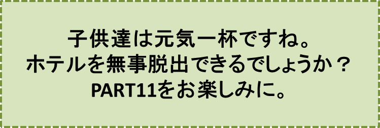

リンゴの木の神様とその弟子達-PART10-
『虜（とりこ）になった子供達』の巻
笠原正雄
子供達は、覚悟はしていましたけれど恐怖で息が詰まりそうでした。
そんな中、ソファの下ベッドの下にもぐり込んでいる子供達の目に、大きな足が二歩三歩、部屋の中に入ってくるのが見えました。
「うわっ、はっ、はっ、はっ、はっ、はぁー。小さなネズミ達よ！ わしが、仕掛けておいたネズミ取りにうまいこと引っ掛かってくれたなぁ」
と、フロントの男は、さも小愉快そうに言って、息を二、三度大きく吸い込んだ後
「小さなネズミ達よ。お前達は、この部屋に入って高村イサムさん達と一緒に大騒ぎをしていたなぁ。
……このわしに、何のことわりもなく入ってきた罰を、今、お前達は受けるんだ」
と、声を上擦（うわず）らせながら話を続けます。
「わしは、高村イサムさんがお父さんと一緒にどこか遠くの町に帰られた後も、お前達がいつかは、この部屋に来ると思って、この部屋の扉に特別な鍵をつけておいたのだ」
“うわっはっはっはっはぁー”
「この大きな部屋全体が、ネズミ取りなんだ！“ガチャーン”、と鍵が外からかかったが最後、二度と、外には出られないんだぞ」
ドアの外でフロントの男はもう一度
“うわっはっはっはっはぁー”
とさも愉快そうに笑った後、部屋の扉を“バターン”と大きな音を立てて閉めました。と同時に“ガチャン”と、鍵のかかる音がしました。
男の足音がすっかり聞こえなくなると、子供達は、ベッドの下ソファの下から飛び出しました。
そして大急ぎでドアに駆け寄ります。
ドアの取っ手を思いっ切り力任せに、回してみましたけれど、勿論びくっとも動きません。
子供達は口々に叫びます。
“畜生！ こんなことをするなんて！”
“杉村先生は、柔道三段剣道三段だぞ！ きっと、腕づくで思い切り懲らしめてくれるさ！”
“その前に、与平小父やハチロー小父がやってきて、きっとボク達を探し出してくれるよ”
“いや、巡査さんが真っ先に駆けつけて来て、フロントの男化けものコウモリに手錠を”ガチャン“と付けてくれるに決まっている”
子供達は口々に叫びます。
三郎は、こんな騒ぎの中でベッドの近くに置かれた電話機の傍で唯一人立ち尽くしています。
「だめだ。電話が不通になっている……」
と何回も繰り返しつぶやき、呆然と立ち尽くしています。
明が窓を大きく開けて
「おーい！ 助けて！」
と叫びます。外は白カバやモミスギなどの木々が原っぱの向うに見えるだけ。
木々の葉っぱが小さな声で
“サワ” “サワ” “サワ”
と答える。子供達はお互に顔を見合わせます。そして力なくベッドやソファに座り込んでしまいました。
しかし何と、こんな子供達の中で笑みを絶やさず、皆の狼狽（ろうばい）ぶりの一部始終を眺めている子供が一人居たのです。
その異端者こそ章介でした。
彼の目は輝きに満ち、口もとには微笑すら浮かんでいました。
章介は、自信たっぷりで皆に向かって口を開きます。
「おい、皆（みんな）！ 慌てることはない！ 絶対にない！ ボク達の前に恐れるものは何もないんだ！」
この章介の言葉に四つの口が一斉に開きます。
「何だって！ ボクらはこの通り囚われの身だよ！ このまま夜になれば、どうなると思う？ フロントの男は夜になったら化け者コウモリのようになって、この部屋に……」
この声の先は震えて消えてしまいました。
章介は笑い飛ばします。
「皆（みんな）間違っている。本当に面白い程間違っている！ 化け者コウモリのやったことは、ほんの小っぽけなことさ。だって、そのドアは簡単に開けることができるから」
この声に三平がドアのそばに飛んでいきます。
「開くものか！ ほらっほらっこんなに固く閉まっている」
章介の顔は、この三平の声を聞くとにっこりとほころびます。彼の顔は自信に満ち、その頬はリンゴのように真っ赤です。
どうして章介の目は希望に燃えているのでしょう。どうして自信一杯なのでしょう。
残念なことに、章介の顔を幾ら眺めてみても、章介の心の中までは、何人も覗き見ることはできないでしょう。
『リンゴの木の神様とその弟子達』を皆様に語る私が、章介の心の中を慮（おもんぱか）って、詩に託してみることにしましょう。
――ボク達の心の中に
リンゴの木の神様が住んでいる――
――リンゴ並木が町にある限り――
――並木の上に青空がある限り――
――ボクらの唇に歌と笑いがある限り――
――ボク達の心の中に
リンゴの木の神様が住んでいる――
――ボク達は恐れない。ちっとも恐れない――
――リンゴの木の神様が心の中に住んでいる限り、
ボク達の前に恐れるものは何もない――
章介の自信に満ちた態度に誘われるように、明もすっかり元気を取り戻します。
常に口もとに微笑を絶やさない自信に満ちた章介の態度を見て、三郎やオサムは、日曜日の朝リンゴ並木に突然現れたイサムの姿を重ねました。強く強く、重ねました。
この瞬間、壁にかけられた『リンゴの木の神様』の絵に、日の光が一段とまぶしく当ります。
神様の持っていらっしゃる籠（かご）の中の赤、青、黄色のリンゴ達は一段とまぶしく輝きました。
子供達はその素晴らしさに目を見張ります。
章介が叫びます。
「皆（みんな）見ていろ！」
彼の右手は、高く掲げられ、その手には鍵が、しっかり握られています。
この鍵、全く普通の鍵です。ステンレス製の家のドアの鍵かなんかに、違いありません。
「見ていろ！」
章介はもう一度こう大きく叫ぶと
“えいっ”
とばかりに、右手にしっかり握っていた鍵を力一杯放ちました。
鍵は大きく弧を描いて籠の中のリンゴに命中します。
神様の腕の中に抱かれていた赤、青、黄色のリンゴ達が弾き飛ばされ、赤、青、そして黄色に輝く無数の鍵となって、日の光に、キラッキラッと輝きながら床に舞い降りました。
子供達は
“わぁーい”
と叫んで手に手に鍵を拾います。
何と美しい鍵でしょう。彼らは両手に溢れんばかりの鍵を拾って、にこにこにっこりです。
この様子を口元に笑みを浮かべて眺めている章介の右手には、黄金に輝く鍵が、しっかり握られています。
彼は右手を再び高く掲げて、叫びます。
「安心しろ！ この部屋は、この鍵で必ず開くから」
彼は自信たっぷりに、大きくワインドアップ。
“えいっ”
とばかりにドアに向って右手に高く掲げられていた黄金の鍵を放ちます。
黄金の鍵はドアの中にすっぽり消えました。皆は
“わぁーい”
と叫んでドアに駆け寄ります。ドアは難なく開きました。
彼らはもう一度
“わぁーい!”
と大きく叫んで廊下に飛び出します。
恐ろしくも楽しい冒険をした後に経験する、あの爽やかなそして堪（たま）らなく愉快な気分が、子供達の胸に大きく大きく広がります。
♪♪♪♪コーヒーブレイク♪♪♪♪
